All Battle Field Guide in Mobile Legends: Bang Bang

Until this latest Update called "Project NEXT", There are six types of game mode in mobile legends.
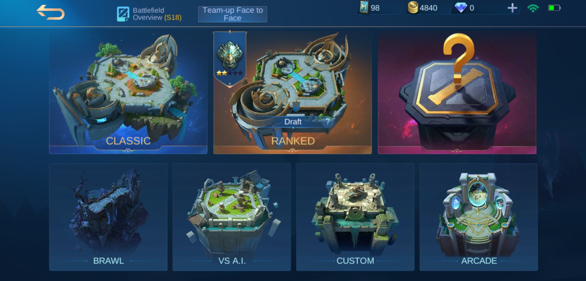Classic
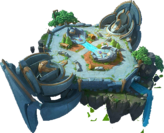Classic
Classic is the earliest game mode in Mobile Legends. All other game modes use the rules in Classic as a base. This mode gives 5 vs 5 and the Mobile Legends experience without worrying about losing Rank but your win rate will be affected, both from the hero side and the whole. Classic mode is suitable for beginners who need to familiarize themselves with Mobile Legends games. You can freely choose any hero you have, plus the Weekly Free Heroes and the trial cards. However, in one team there can be no same hero.
Classic Mode is a great place if you want to play more relaxed or hone skills using a new hero. If you just recently bought a hero and still unfamiliar as to how the hero work, you can familiarise yourself on using that hero first in .
Objective
Like all MOBAs the primary goal is to destroy the Enemy Base Inhibitor. Defending each Turrets and Base inhibitor, each Turret in one lane must be destroyed in sequence (one cannot skip straight to the Base Inhibitor). There are ways to destroy turrets by making use of the minions/creeps to take the damage of the turret's fire. After the turrets have been destroyed, you will be able to damage/destroy the Enemy Base Inhibitor. They may be weak but they are a vital part of winning. Destroying the final Turret in a lane will grant super minions which can inflict high damage to heroes. Sometimes Players get caught up with their kills which results getting MVP but getting the Enemy Base Inhibitor is the real victor of the game.
In this video, the new Map called "The Celestial Palace" was launched on January 2018. This video will show you how the map look nice with HD quality and how the jungle monsters in that new map.
Ranked
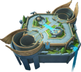Ranked
When your accound reaches Level 8 and when you have at least 5 or more heroes, you'll unlock the Ranked Game option. Ranked Game is a competitive seasonal game mode that runs for three months, where you will be placed in one of the 8 divisions of the Ranked Game that is arranged from the lowest to highest: Warrior, Elite, Master, Grandmaster, Epic, Legend, Mythic and Mythic Glory. Warrior is the lowest division in the game while Mythic Glory is the highest.
Player will be matched to opponents and allies that have similar or nearing Ranked Division. Every time you win a match in a Ranked Game, you will be awarded 1 star, while losing a Ranked Game will deduct you 1 star. Players can invite friends to play in ranked games together. A Ranked Game allows Solo, Duo, Trio and Squad Match-ups. However, we cannot play four players. invited players must be within at least two ranks of each other.
Mythic is the highest division in ranked play, and the top 50 players at Mythic rank on every server, will receive the Glorious Mythic title. Players who reach Mythic and Glorious Mythic rank can unlock exclusive avatar borders, among other cool rewards.
When a player is ranked between Warrior and Grandmaster, they will go through the usual selection phase as they would experience in Classic. However, when a player reaches Epic or above, the selection phase will now become Draft Pick. When the season ends, Ranked Games will be temporarily unavailable, until the new season starts, where the player will be placed on a new starting division determined by their highest division on the previous season. For more information about Starting Division after a new season starts, visit New Season Rank Inheritance down below this article.
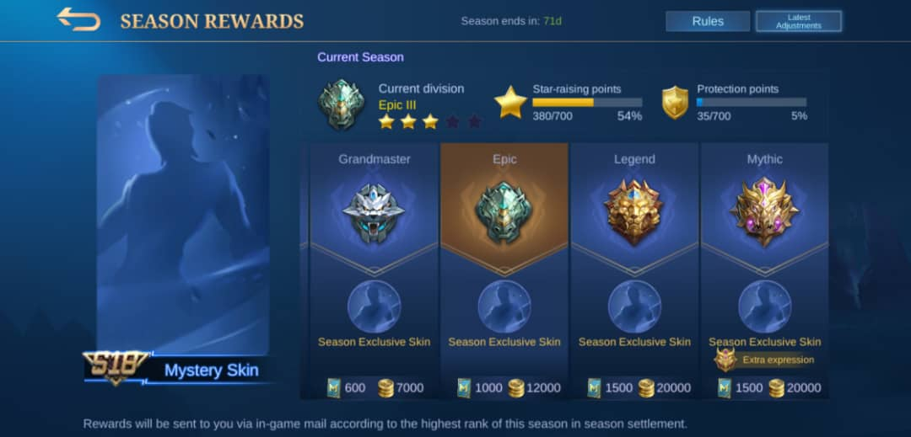Ranks
Ranks are the Grading System for Mobile Legends players that determines how proficient and experienced the player is. Players are rewarded one star for every victory in a Ranked Game, but they lose a star for every defeat in a Ranked Game. When a player has full stars in level within a division, the next victory will result in a promotion to the next level within a division.However, when a player has full stars in a level 1 within their division (ex.Warrior I, Epic I and Legend I), they will be promoted to the next division.
When a player has no stars in a level within their tier, the next defeat will get them demoted to the previous lower level (ex. Epic II → Epic III and Legend IV → Legend V) in their division. However, if they have no more stars within the lowest level in their division, they will drop down to the highest level of the lower division (ex: Legend V → Epic I and Grandmaster V → Master I). In the Warrior division, no stars will be deducted for losses. For some of the ranks, if they reached another rank, it increases the slot by 1-star. All the info for the individual ranks is given below.
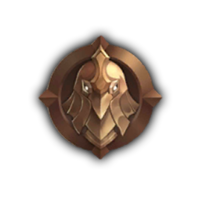Warrior
Warrior is the first rank, given to new ranked game players (when they unlock Ranked Game) once they fulfill the requirements. At this rank, you start at the lowest level, Warrior III. It takes three stars to rise to the next level, such as from Warrior III to Warrior II. The rank has only 3 divisions and it requires 4 stars to rank up to the next division/rank. When you lose in a match, as warrior ranked player, your star will not be lost. Ranking up to Elite requires Warrior 1 and 4 stars for promotion. When playing with friends, only Elite or below ranked co-players can invite you.
Warrior Player Rewards when the season ends
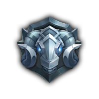Elite
Elite is the 2nd rank, after Warrior. You begin from the lowest level (Elite III), and it takes 5 stars to the next level, such as from Elite III to Elite II. The rank has only 3 divisions but requires 4 stars in order to rise to the next rank. Once you lose a match, you will lose a star but the loss can only be protected by Protection points or due to a special condition. If you lose in a game, with a player in your team being AFK during first 3 minutes, a star can be protected, but this can happen only once in a day. Ranking up to Master requires Elite 1 and 4 stars to promote. Here, only Warrior, Elite or Master ranked friends can invite you.
Elite Player Rewards when the season ends
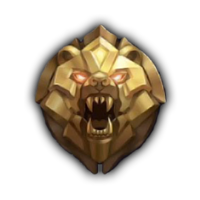Master
Master is the 3rd rank, after Elite and at this level, things become slightly heavier as the player begins from the lowest level Master IV and it takes 5 stars to rise to the net level, such as from Master IV to Maste III. Thee rank has only 4 divisions but requires 5 stars to rank up. Ranking up to Grandmaster requires Master 1 and 5 stars for promotion. Only Elite, Master, and Grandmaster friends can invite yo, when playing this rank.
Master Player Rewards when the season ends
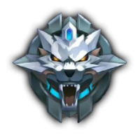Grandmaster
Grandmaster is the 4th rank after Master at this level is different from the previous tier, the game is getting fiercer and more serious, begin from the lowest level Grandmaster V and it takes 5 stars to rise to the next level, such as from Grandmaster V to Grandmaster VI. The rank has only 5 divisions but requires 5 stars to rank up. If you are in the Advance server from this rank to Glorious Mythic, players with that rank can unlock Draft Pick which is a special match that can be commanded by spectators. The game gets harder and the applied model is different. If in the previous model, both teams can use the same hero on both sides, but in the draft pick mode, each team can only use one hero and ban two heroes from being used. Once you lost in a match, you will lose a star but can only be protected by Protection points. Ranking up to Epic requires Grandmaster 1 and 6 stars for promotion. Only Master, Grandmaster, and Epic friends can invite you.
Grandmaster Player Rewards when the season ends
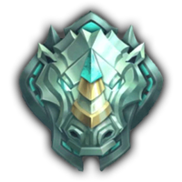Epic
Epic is the 5th rank after Grandmaster. At this level, even in normal server, the game is getting harder and the applied model is different. If in the previous model, both teams can use the same hero on both sides, but in this draft pick mode, each team can only use one hero and ban three heroes from being used. Players who reach this level should be able to use all heroes and hero roles respectively. Players who can only use one hero will have difficulty reaching Epic and Legend divisions. Because the model of the battle presented was different. If the previous four tiers may use the same hero in both teams, then this tier is not. Each team may only use one hero. Implementation of strategy and tactics is absolutely done on this tier if you want to gain victory and reach higher divisions. Usually, a lot of great players play on this tier, then it will be difficult if you mastered some heroes only. The rank has only 5 divisions but requires 5 stars to rank up. Ranking up to Legend require Epic 1 and 5 stars for promotion. Only Grandmaster, Epic, and Legend friends can invite you.
Epic Player Rewards when the season ends
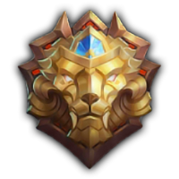Legend
Legend is the 6th rank after Epic. It is known to be the 2nd to the highest rank before the Mythic Rank come. In this rank, matches will still be in Draft Pick mode where players will take turns in banning and picking heroes. The rank has only 5 divisions but requires 5 stars to rank up. Ranking up to Mythic requires Legend 1 and 5 stars. You can only play with Epic, Legend and Mythic friends.
Legend Player Rewards when the season ends
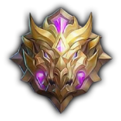Mythic
Mythic is the 7th rank after Legend. It is known to be the highest in the Mobile Legends Ranked mode. ON this tier, you are expected to be flexible with heroes or roles that you pick and possess tremendous skills in the heroes that you choose to play. Mythic division is divided into 5 tiers from Mythic V to I, in which a pure point system applies. This increases points based on matches won and similarly decreases points on matches lost. Every tier is worth 100 points, which is gained by ranked matches, depending on the tier and points held by the opponents. Conquering oppositions with higher points will, in turn, grant the player, higher points while losing to enemies with lower points will have a bigger loss of points. Losing a match at 0 points will drop the player back to Legend I, while gaining 600 points or cruising above the 50th rank of the server, grants the Glorious Mythic title. Ranking up to Mythic requires Legend I and 6 stars, along with the completion of the placement matches.
Mythic Player Rewards when the season ends
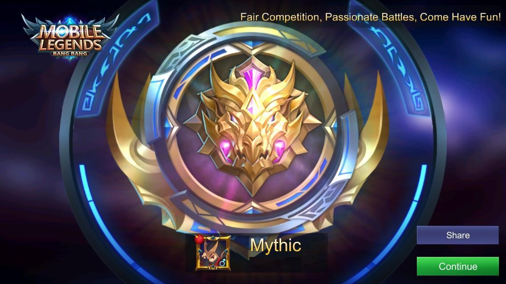Brawl
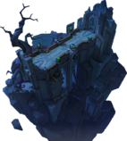Brawl
In Brawl Mode, you are unable to choose your hero freely. Instead, you will be given a choice between two random heroes . This mode contains only one lane and two turrets defending the base in both teams respectively. Brawl matches is not as long as Classic and Ranked Mode. It nomally ends within 10 - 20 minutes.
Some differences in Brawl compared with Classic and Ranked Mode
- Players are only given one lane instead of three
- The players can choose one hero between 2 random heroes
- Players who have been out of the base cannot enter the base again
- Items can only be bought inside the base in order to buy more, you must die and respawn.
- You can try the new heroes in this mode.
At the beginning of the match everyone will start with 800 Gold and Heroes ata Level 3 instead of Level 1. All players will spawn in a circle, which is the only zone that you can buy the items. Once leaving the circle, you will not be able to buy any items regardless fo the amount of gold you have unless you died and respawn within the circle.
In this mode, going back to base will not regenerate any health not mana. Healing spells or support heroes, that can heal, can be used as temporary regeneration. However, heroes who die in battle will have a chance to drop healing glyph. Jungle also provide in the middle of the lane. They also can regerate the large amount of mana and health.
Vs A.I.
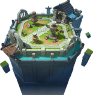Vs A.I
Just as the name of the mode, it will present the player with a 5 vs 5 matchup, similar to any other mode. However, you will not play with real players but insteaed play against with computer-controlled opponents. An AI (Artificial Intelligence) team automatically driven by the computer will fight against you.
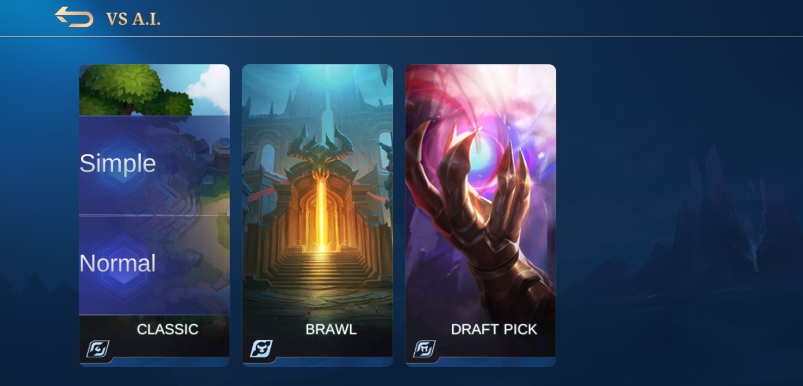Normally, this mode is to try the new hero that you bought or train hero that you will use in the Ranked mode. In this mode, it will not affect on the win rate of the hero and you can also earn the battle point after you complete the Vs A.I. match. As always, players can invite up to 4 friends to practice together against the computer. There are three game modes you can pick in this game: Classic, Brawl and Draft pick.
Inside those mode, there are also two different settings: AI: simple and AI: Normal.
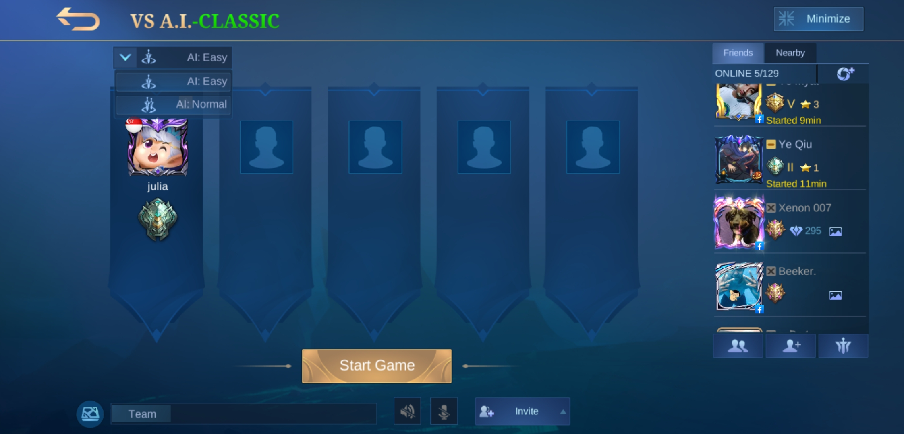AI: Simple is very easy AI, so good for practicing a new hero that you have unlocked or you are not even familiar with.
AI: Normal has slightly more advanced AI opponents who can sometimes pose as a threat as they farm, lane and carefully use skills. This difficulty is a bit more challenging than AI: Simple, and a much better option to practice a hero in an almost-real fight.
Custom
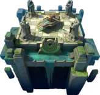Custom
Custom games are very similar to Vs A.I. and the difference is players can set themselves against other people that they invited or against computer. In this mode, player can add AI to the opposing team or on their team and also can play alone with AI.
You can choose which mode you want to play. There are 4 types of game modes in Custome. They are Classic, Brawl, Draft Pick and Practice. Custom mode will not affect your Statistics. You also won't get any battle point or EXP.
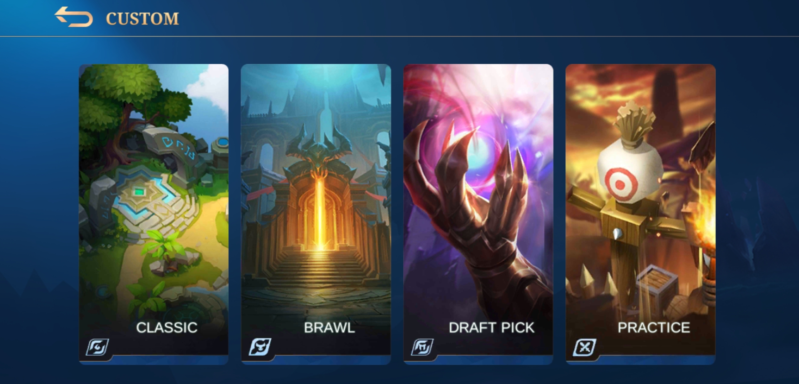The rule of this mode is same as Classic Mode, but here you have the freedom to manage the number of players. You can play 1 vs 1 with friends in this game, or play 2 against 3 AI and 2 friends, or one against 5 friends.
Some youtubers used this game mode to explain the items, equipments and the heroes. Some invite players who want to play 1 vs 1 hero and made the live stream. In some esport competation, they used this draft pick mode and played as a rank mode.
Arcade Modes
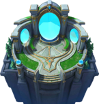Arcade
Arcade Mode is an additional game in Mobile Legends: Bang Bang that can time -to-time be playing during Special Events, Holidays or Occasion. The mode feature various strategy based sub-games that are listed below. In last update Patch Note 1.4.60, Magic chess was included as a permanent arcade game, after temporality baing added in January 2020.
Moonton's Office Patch Note 1.4.86 Statement: After 2 years released, they are planning to add more new contents to this mode. There will be a significant update in the future. Therefore, there is the first season settlement of the Survival Mode along with S16 settlement. You will receive the reward according to your division in the Survival Mode. Survival Mode is not available for a period of time for upgrades and optimizations. The company announced that the new Survival Mode will be back as soon as the upgrade is done. Therefore, let's join the Magic chess Mode during this period!
Content
Magic Chess
Fast-paced auto chess competition among 8 players.
Magic chess is an 8-player complex strategy based game mode, where players will complete against each other and random creeps in the Magic Chessboard. The goal of this game is to buy and upgrade your heroes and the little commander, customixing your lineup to trigger and counter more and stronger synergies. The victory belongs to the one who stands untill the last.
Synergy is the most crucial part of the entire magic Chess mode as it can lead you to take victory if done strategically. Synergy is subdivided into two, the Role and the Faction. There are a total of 9 roles complemented by 11 Factions. Most units have one designated Role and Faction, with some exceptions having a total of three synergies altogether.
Role
Faction
- Elf
- Western Desert
- Special Guest
- Cyborg
- Blood Demon
- Dragons Alter
- Monastery of Light
- Northern Vale
- Abyss
- Celestial
- Empire
Removed Synergies
Mayhem
Mayhem
Christmas
Halloween
Bruno Cup
In the past, this game didn't have an official name. Back when Easter 2017 came, this Game Mode was first released and it was simply called Easter. The gameplay was different, with consumable Eggs scattered through the map, each type giving different buffs; only some heroes were playable and some of their skills were modified for this Game Mode, you also started at level 4; the mode was then removed when Easter ended.During Halloween, this mode come back again with the same features as Easter but different Halloween themed Map. Then also same for Christmas. Finally Mayhem Mode was introduced: this time the Game Mode didn't have consumables, but it had Modified Skills and Map Changes. There are only 49 heroes available in this mode.
Mirror
Duels of the same hero but different tactics.
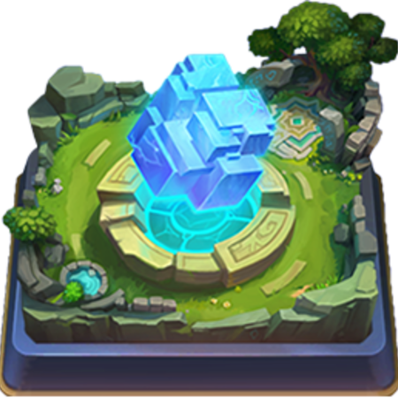Mirror
Mirror mode uses the same map as Bruno Cup Mayhem mode (in fact, the map's layout, the Lord, and minions have the same theme), however, during the selection phase, in each team, the players will upvote one amongst the six randomly picked heroes. The one with most votes will be the chosen hero for their entire team. Like Mayhem mode, the players will start at hero level 3 and receive 900 gold. Just as with all game modes, the objective is to destroy the enemy base.
Survival
Will you be the one who will stand to the last?
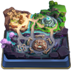Survival
Survival is similar to any other Battle Royale game, but with few tweaks in order to fit in Mobile Legends. Survival only works with teams of 3 players in a 99 Players battle (33 Teams) and the Map won't be Celestial Palace or Western Expanse, as in other game modes, it will rather be settled on a unique Map, the Maze of Minos, which is a very large map to fit 99 Players in it. Survival only offers 15 selectable heroes, dividing them into three groups of 5: Physical, Magical, and Defense. Looting in this Game Mode is different from Battle Royales: you have to kill Creeps/Jungle Monster in order make them drop items, and there are 4 New Creeps in this Game Mode, each one with different chances of dropping items for the three categories. To find out more about this game mode click the highlighted text above.
Deathbattle
Play different heroes in a single-match!
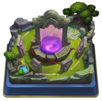Deathbattle
It is another game type on Mobile Legends, the selection is much similar to survival whereby the player must choose a hero among the randomly selected heroes, whether owned or not. In gameplay, when the hero dies, the player must choose another hero. There are 2 ways to get victory: either destroy the enemy base or achieve 30 kills before the enemy got. In 2019, this is released in coordination with the spring Festival. So, the battlefield is matched to this occasion.
Frenzy
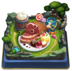Frenzy
In this mode, vorious food items can be found around the map. By picking different food items up, plaayers cacn get different buffs that enhances their hero abilities. Food items can be found at the spot where some of the creeps are killed.
Food item list
Icon
Food Item
Buff
Candy Corn
Become invisible. Using Basic Attack or Skills will force the hero to become visible again.
Random
Get a random effect (Gold, Red Tin, Candy Corn, Rubber Candy, Blue Tin, Green Tin, Hard Candy or Ham).
Hard Candy
Decrease defense power. Deals a large sum of damage to nearby enemies upon death and reduce the time of this respawn.
Evolve
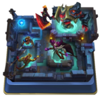Evolve
It was released on April 20, 2019. in the game, there are 15 players. They are dropped in a map where they have to level up and evolve by collecting gems dropped by monsters and randomly spawn around the map, aiming to be the last player standing. Killing an enemy player won't eliminate them, they will rather suffer a respawn penalty time and lose some experience, however, once the first player has reached level 15 and becomes the "Devil", any death is permanent.
Monsters will also drop colored gems that permanently increase stats: red gems increase physical attack, Blue Gem increase magical attack and green gems increase HP. Different monsters drop different gems. Some higher-level monsters will also drop Battle Spells to equip; only one can be equipped at a time, as one is already given once reaching Level 6.
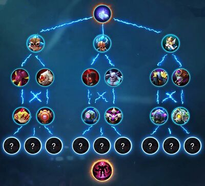Revage
Sci-fi style scramble battle.
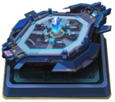Revage
Ravage is a mode where each team consists of 5 different roles and fights for Aquamarines. Each player can choose 5 heroes of different roles before partaking in a Ravage match. After the matchup, each player randomly uses one of the 5 heroes they previously chose. In this mode, while two teams fight against each other, Aquamarines begin to drop around them. The first team that collects a certain amount of Aquamarines will win the match. Being eliminated causes a player to lose all Aquamarines, which scatter on the ground. If a player holds more than 10 Aquamarines, his location will be exposed on the mini-map.
In the center of the Ravage Mode map lies the only HP Regeneration spot. The first team to accumulate 15 Aquamarines will win this match. No laning, no destroying turrets, to kill, and ravage is the goal of this mode! Come and have fun, you will be the winner!
From 7-13 August 2020, Ravage Mode came back with a new 3V3 mode. Only 3 out of 5 roles will be used and all players will start with 20,000 Coin.png and hero level in 15 (max).
Brawl & Mirror
Exciting Brawl Match among the Mirrored Heroes!
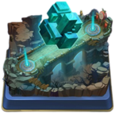Brawl & Mirror
In this mode, players vote for the hero they would like to use out of a random set of heroes. The hero with the most votes will become the hero that is used by the entire team.different heroes receive different attribute buffs to create more balance among heroes of different roles, thus improving the overall game experience. This mode is same as mirror mode but different map that has only one lane ,two turrets.
Brawl & Mirror
Chess TD
Tower Defense Battle Royale Match
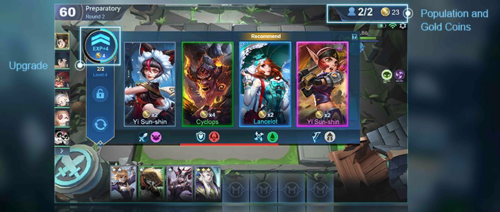Chess TD
CHESS-TD is an Arcade Mode that is full of fun and strategy! In this mode, 6 will be distributed into 6 maps and confront with each other and with creeps. Players can buy heroes from the shop, buy their own lineup, loot golds, and enhance their troops to get to the victory. This map is random for every match. Players can buy Heroes from the shop and deplay them on stones that ae higher than the ground (slots). Deployed heroes will attack nearby enemies automatically and cast their skill once they gain enough mana.
This video will introduce about the chess TD mode in Mobile Legends.